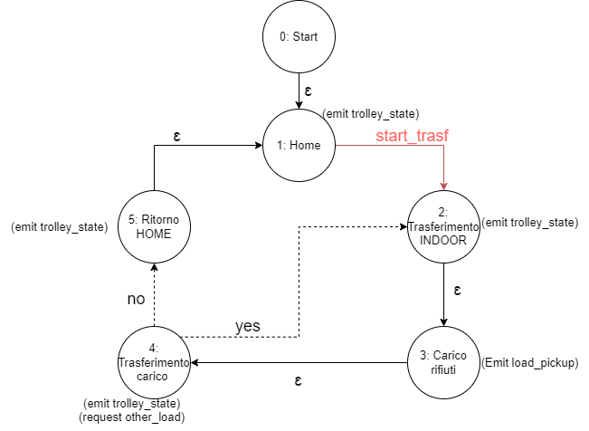
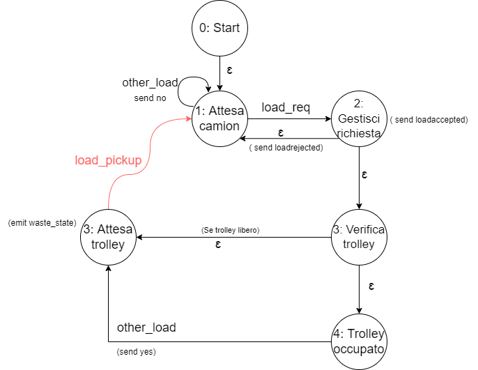

Introduction
Progetto finale del corso di studio Ingegneria dei sistemi software M, Laurea Magistrale Università di Bologna.
Requirements
Una compagnia intende costruire un WasteService per la raccolta differenziata.
1) ZONA_SERVIZIO: una zona di servizio (rettangolare, pianeggiante) che comprende:
- una porta INDOOR , per l'immissione di materiale di scarto
- un contenitore PlasticBox , dedicato alla conservazione di oggetti in plastica, fino a MAXPB kg di materiale. (CAPIENZA_PLASTICA)
- un contenitore GlassBox , dedicato alla conservazione di oggetti in vetro, fino a MAXGB kg di materiale. (CAPIENZA_VETRO)
L'area di servizio è libera da ostacoli interni.
2) ROBOT: un robot DDR che funge da carrello di trasporto , che è inizialmente situato nella sua posizione HOME (POSIZIONE_INIZIALE) .
Il carrello di trasporto ha la forma di un quadrato di lunghezza laterale RD.
COMPORTAMENTO_ROBOT: Il carrello di trasporto viene utilizzato per svolgere un'azione di deposito che consiste nelle seguenti fasi:
- raccogliere un carico di rifiuti da un camion dei rifiuti situato all'INDOOR
- passare dall'INDOOR all'apposito contenitore dei rifiuti
- depositare il carico di scarto nel contenitore
3) GUI: un Service-manager (un essere umano) che supervisiona lo stato dell'area di servizio utilizzando una WasteServiceStatusGUI .
4) SONAR_LED: un Sonar e un Led collegati a un RaspberryPi. Il Led viene utilizzato come dispositivo di segnalazione , secondo il seguente schema (COMPORTAMENTO_LED):
- il Led è spento quando il carrello di trasporto è a HOME
- il Led lampeggia mentre il carrello di trasporto è in movimento
- il Led è acceso quando il carrello di trasporto è fermo. (Stopped)
COMPORTAMENTO_SONAR: Il Sonar viene utilizzato come 'dispositivo di allarme': quando misura una distanza inferiore ad un valore prefissato DLIMT ,
il carrello di trasporto deve essere fermato. Verrà ripreso quando il Sonar rileverà una distanza maggiore di DLIMT .
5) OBIETTIVO: L'obiettivo principale del software WasteService è quello di consentire a un camion dei rifiuti di depositare il proprio carico di TruckLoad kg di plastica o vetro nell'apposito contenitore.
Il comportamento può essere descritta come segue:
5.1) RICHIESTA_CAMION: Il camion si avvicina all'INDOOR e invia (tramite un dispositivo smart) la richiesta di immagazzinare il carico, specificando la tipologia del materiale (plastica o vetro) e il suo TruckLoad .
5.2) WasteService invia la risposta loadaccept se il contenuto finale del contenitore appropriato non supererà il valore massimo consentito ( MAXPB o MAXGB )(CARICO_ACCETTATO).
In caso contrario, invia la risposta loadrejecetd e il camion dei rifiuti lascia l' area INDOOR (CARICO_RIFIUTATO).
5.3) TRASFERIMENTO_CARICO: Quando il carico viene accettato, il carrello di trasporto raggiunge l' INDOOR , preleva il materiale, va all'apposito contenitore e deposita il materiale.
Durante questa attività il WasteService fa lampeggiare il Led.
5.4) FINE_TRASFERIMENTO: Quando l'azione di deposito è terminata, il robot esegue un altro comando di deposito (se presente) o ritorna alla sua HOME .
5.5) GUI: WasteService deve creare una WasteServiceStatusGUI che mostri al Service-manager :
-lo stato attuale del carrello di trasporto e la sua posizione nella stanza
-il peso attuale del materiale stoccato nei due contenitori per rifiuti
-lo stato attuale del Led
1) ZONA_SERVIZIO: una zona di servizio (rettangolare, pianeggiante) che comprende:
- una porta INDOOR , per l'immissione di materiale di scarto
- un contenitore PlasticBox , dedicato alla conservazione di oggetti in plastica, fino a MAXPB kg di materiale. (CAPIENZA_PLASTICA)
- un contenitore GlassBox , dedicato alla conservazione di oggetti in vetro, fino a MAXGB kg di materiale. (CAPIENZA_VETRO)
L'area di servizio è libera da ostacoli interni.
2) ROBOT: un robot DDR che funge da carrello di trasporto , che è inizialmente situato nella sua posizione HOME (POSIZIONE_INIZIALE) .
Il carrello di trasporto ha la forma di un quadrato di lunghezza laterale RD.
COMPORTAMENTO_ROBOT: Il carrello di trasporto viene utilizzato per svolgere un'azione di deposito che consiste nelle seguenti fasi:
- raccogliere un carico di rifiuti da un camion dei rifiuti situato all'INDOOR
- passare dall'INDOOR all'apposito contenitore dei rifiuti
- depositare il carico di scarto nel contenitore
3) GUI: un Service-manager (un essere umano) che supervisiona lo stato dell'area di servizio utilizzando una WasteServiceStatusGUI .
4) SONAR_LED: un Sonar e un Led collegati a un RaspberryPi. Il Led viene utilizzato come dispositivo di segnalazione , secondo il seguente schema (COMPORTAMENTO_LED):
- il Led è spento quando il carrello di trasporto è a HOME
- il Led lampeggia mentre il carrello di trasporto è in movimento
- il Led è acceso quando il carrello di trasporto è fermo. (Stopped)
COMPORTAMENTO_SONAR: Il Sonar viene utilizzato come 'dispositivo di allarme': quando misura una distanza inferiore ad un valore prefissato DLIMT ,
il carrello di trasporto deve essere fermato. Verrà ripreso quando il Sonar rileverà una distanza maggiore di DLIMT .
5) OBIETTIVO: L'obiettivo principale del software WasteService è quello di consentire a un camion dei rifiuti di depositare il proprio carico di TruckLoad kg di plastica o vetro nell'apposito contenitore.
Il comportamento può essere descritta come segue:
5.1) RICHIESTA_CAMION: Il camion si avvicina all'INDOOR e invia (tramite un dispositivo smart) la richiesta di immagazzinare il carico, specificando la tipologia del materiale (plastica o vetro) e il suo TruckLoad .
5.2) WasteService invia la risposta loadaccept se il contenuto finale del contenitore appropriato non supererà il valore massimo consentito ( MAXPB o MAXGB )(CARICO_ACCETTATO).
In caso contrario, invia la risposta loadrejecetd e il camion dei rifiuti lascia l' area INDOOR (CARICO_RIFIUTATO).
5.3) TRASFERIMENTO_CARICO: Quando il carico viene accettato, il carrello di trasporto raggiunge l' INDOOR , preleva il materiale, va all'apposito contenitore e deposita il materiale.
Durante questa attività il WasteService fa lampeggiare il Led.
5.4) FINE_TRASFERIMENTO: Quando l'azione di deposito è terminata, il robot esegue un altro comando di deposito (se presente) o ritorna alla sua HOME .
5.5) GUI: WasteService deve creare una WasteServiceStatusGUI che mostri al Service-manager :
-lo stato attuale del carrello di trasporto e la sua posizione nella stanza
-il peso attuale del materiale stoccato nei due contenitori per rifiuti
-lo stato attuale del Led
Requirement analysis
QUESITI:
- Dimensioni Plastic e Glass Box?
- Coordinate precise di delle varie aree?
- Waste Truck attende fino a che il carico non é stato prelevato (necessitá di comunicazione tra Trolley e Waste Truck)?
- Plastic e Glass Box possono essere "svuotati" oppure il loro carico puó solo aumentare?
- I valori MAXGB, MAXPB, RD e DLIMIT sono definiti a priori o cambiano dinamicamente e da chi vengono decisi?
- GUI: Design WasteServiceStatusGUI?
- COMPORTAMENTO_SONAR: il Service-manager é l'utilizzatore del Sonar, utilizza il Sonar per bloccare il robot?
- Il led che è accesso quando il robot é STOPPED : inteso quando fermato a causa del sonar? oppure anche davanti ai box per scaricare il carico.
- TruckLoad e il tipo di carico come viene definito?
- Cosa si intende per dispositivio smart?
FORMALIZZAZIONE DI ALCUNI REQUISITI:
- HOME coincide con l'incrocio del muro in alto e quello di sinistra (angolo in alto a sinistra).
- FINE_TRASFERIMENTO: bisognerá tenere traccia delle richieste che giungono durante il singolo trasferimento.
- RaspberryPi, Robot e Gui possono essere entiá che operano su nodi differenti, quindi é necessario tenere conto che possono essere distribuiti e perció tenere in conto che devono comunicare tra loro.
A questo punto é necessario effettuare un piccolo riassunto per evidenziare ad alto livello le entitá e funzionalitá presenti nel sistema:
- Dimensioni Plastic e Glass Box?
- Coordinate precise di delle varie aree?
- Waste Truck attende fino a che il carico non é stato prelevato (necessitá di comunicazione tra Trolley e Waste Truck)?
- Plastic e Glass Box possono essere "svuotati" oppure il loro carico puó solo aumentare?
- I valori MAXGB, MAXPB, RD e DLIMIT sono definiti a priori o cambiano dinamicamente e da chi vengono decisi?
- GUI: Design WasteServiceStatusGUI?
- COMPORTAMENTO_SONAR: il Service-manager é l'utilizzatore del Sonar, utilizza il Sonar per bloccare il robot?
- Il led che è accesso quando il robot é STOPPED : inteso quando fermato a causa del sonar? oppure anche davanti ai box per scaricare il carico.
- TruckLoad e il tipo di carico come viene definito?
- Cosa si intende per dispositivio smart?
FORMALIZZAZIONE DI ALCUNI REQUISITI:
- HOME coincide con l'incrocio del muro in alto e quello di sinistra (angolo in alto a sinistra).
- FINE_TRASFERIMENTO: bisognerá tenere traccia delle richieste che giungono durante il singolo trasferimento.
- RaspberryPi, Robot e Gui possono essere entiá che operano su nodi differenti, quindi é necessario tenere conto che possono essere distribuiti e perció tenere in conto che devono comunicare tra loro.
A questo punto é necessario effettuare un piccolo riassunto per evidenziare ad alto livello le entitá e funzionalitá presenti nel sistema:
ENTITÁ
- WASTE_SERVICE
- TROLLEY (sinonimo Robot DDR)
- WASTE_TRUCK (sinonimo camion dei rifiuti)
- WasteServiceStatusGui
- LED
- SONAR
REQUISITI FUNZIONALI
- Richiesta ed eventuale Trasferimento del carico (RF1):
Il WASTE_TRUCK invia una richiesta al WASTE_SERVICE con le caratteristiche del carico (tipo e peso), successivamente il WASTE_SERVICE, in base allo stato attuale (capacitá residua disponibile) accetta (loadaccept) o meno (loadrejecetd) il carico.
Se il carico viene accettato, il WASTE_SERVICE comunica ciò al TROLLEY che si sposta verso l'area INDOOR per prelevare il carico, dopo aver effettuato il prelievo lo notificherá alle varie enitá [DOMANDA]; poi effettua il trasferimento ed infine richiede al WASTE_SERVICE se é presente un nuovo carico:
- Risposta positiva: il TROLLEY si muove verso l'area INDOOR
- Risposta negativa: il TROLLEY torna alla HOME - Sonar e Led (RF2):
in base alla distanza rilevata dal SONAR, il TROLLEY muta il suo comportamento:
- Distanza minore di DLIMIT: il TROLLEY si ferma.
- Distanza superiore a DLIMIT: il TROLLEY si muove.
Il LED mostra lo stato attuale del TROLLEY:
- Acceso: TROLLEY fermo a causa del SONAR (stopped).
- Spento: TROLLEY in HOME.
- Lampeggiante: TROLLEY in azione.
- GUI (RF3):
é presente una gui che mostra:
- Stato corrente del TROLLEY
- Peso corrente dei due box
- Stato del LED
Problem analysis
Architettura logica
Per ogni requisito funzionale viene riportata di segiuto l'architettura logica per mostrare le interazioni tra le varie entitá:Richiesta ed eventuale Trasferimento del carico (RF1):

Sonar e Led (RF2):

GUI (RF3):

A questo punto evidenziamo i contesi necessari:
- CI PENSEREMO NEL PROSSIMO EPISODIO... TO BE CONTINUED.... STAY TURNED! LIKE SE VI E' PIACIUTO IL VIDEO
- RaspberryContext: LED e SONAR
Modello eseguibile
Codice: /src/sprint1.qak- FSM TROLLEY:

- FSM WASTE_SERVICE:

Test plans
Project
Testing
Deployment
Maintenance
Davide Filoni email: davide.filoni2@studio.unibo.it
Fabio Scagliarini : fabio.scagliarini@studio.unibo.it
Filippo Comastri : filippo.comastri2@studio.unibo.it
Link git
Fabio Scagliarini : fabio.scagliarini@studio.unibo.it
Filippo Comastri : filippo.comastri2@studio.unibo.it
Link git